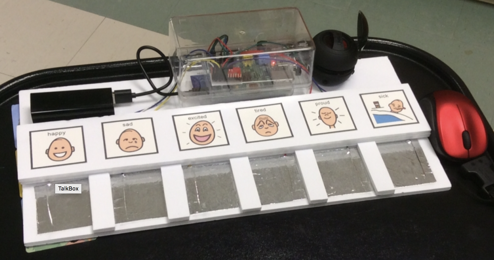

Software Engineering Student

About me
My name is Nina Yanin and I am a third year Software Engineering student at Lassonde School of Engineering, York University. I chose Software Engineering because I have a passion for technology and innovation, I enjoy solving complex problems and learning new things. Most importantly, I want to take part in creating a difference via technological advancements.
Skills
Projects
Website:
I builded this website in order to gather and showcase my work experiece and personal projects in a friendly and intuitive user interface.
Skills used:
html, css and javascript
Check source code here

Check source code here
Talkbox:
I worked as part of a team to build a talkbox configurator and simulator for EECS2311 class. The purpose of the talk box is to assist people with mental or physical disabilities, which prevents them from talking, to communicate effectively.
Skills used:
Java, eclipse, Gradle, Circle CI
Check source code here
Who wants to be a millionaire:
A game of who wants to be a millionaire. I wanted to build a game and utilize the learned skills from the previous course into something constructive and fun.
Skills used:
Java, eclipse
Check source code here
Tic Tac Toe:
A game of Tic Tac Toe. I wanted to build a game that would respond to the user's inputs. In this game, the user plays against the computer where I designed a set of possible moves for the computer to respond to.
Skills used:
Java, eclipse
Check source code here
Work Experience
August 2018 - April 2019
Managed a fast paced environment in serving customers while maintaining good customer service experience and thoroughly representing company's values.
Maintained and inspected surroundings to meet company safety requirements by eliminating potential hazards such as sharp obstacles and liquid spills.
Was responsible to process payment in the point of sale.
June 2018 - August 2018
Collaborated with co-workers to maintain a safe work environment by removing hazards and reporting to manager of unsafe conditions.
Constantly communicated with team members on procedures and timing during the shift in order to deliver excellent products.
Processed payments in the point of sale.
August 2017 - September 2017
Received calls from people who wanted to donate for the Hurricane Harvey Disaster.
Processed donations and recorded it in the online donation page.
Provided information about different options to donate.
July 2017 - August 2017
Answered costumers' inqueries regarding the British Colombia wild fires and provided information about their rights.
Updated costumers' information in the Red Cross Database.
Provided exceptional customer service experience.
February 2016 - June 2016
Configured email addresses in POP3 and IMAP.
Solved problems with websites, emails and domains in a timely manner.
Constantly maintained high level of customer service experience.
Assisted developers to implement company's APIs.
August 2013 - February 2016
Was responsible for human resource systems, NetApp and Virtualization infrastructure.
Oversaw and monitored over 1000 servers – physical and virtual using HP BSM.
Tested the monitoring procedures of systems that they reflect real state of all servers.
Validated and updated regulations.
Server maintenance – arranged operations like skipping to the DR, reset systems and upgrades, analyzed ways to improve systems performance/prevent future failures.
Responded to inquiries regarding software issues.
Managed DNS, WINS, GPO and users and permissions on Active Directory.
Solved problems on Windows servers 2003R2, 2008R2, 2012R2, Linux RHEL6.5, MSSQL servers, TSM servers, VMware servers and NetApp servers.
Perl – write scripts for monitoring systems.
Was personaly responsibility for two HR systems.
Volunteering
April 2013 - November 2011
Joined ambulances and provided first aid treatment to patients under the supervision of paramedics.
Worked as part of a team to provide the best treatment for patients.
Filled paperwork to summarize the patient's condition and given teatment.
Check the program